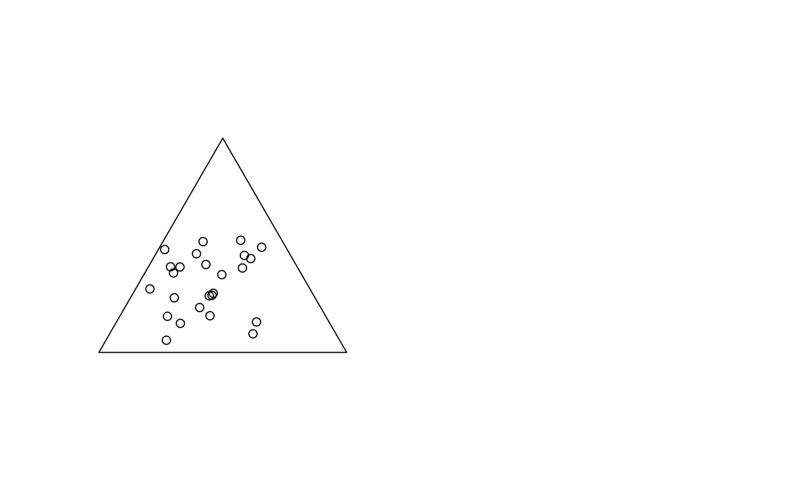

PlotTernary.RdPlotTernary plots in a triangle the values of three variables. Useful for mixtures
(chemistry etc.).
PlotTernary(x, y = NULL, z = NULL, args.grid = NULL, lbl = NULL, main = "",...)vector of first variable. Will be placed on top of the triangle.
vector of second variable (the right corner).
vector of third variable (on the left corner).
list of additional arguments for the grid. Set this argument to NA if no grid should be drawn. The usual color and linetype will be used.
overall title for the plot.
the labels for the corner points. Default to the names of x, y, z.
the dots are sent to points
J. Aitchison (1986) The Statistical Analysis of Compositional Data. Chapman and Hall, p.360.
Venables, W. N. and Ripley, B. D. (2002) Modern Applied Statistics with S. Fourth edition. Springer.
example in Skye
# some random data in three variables
c1 <- runif(25)
c2 <- runif(25)
c3 <- runif(25)
# basic plot
par(mfrow=c(1, 2))
PlotTernary(c1, c2, c3, args.grid=NA)
#> Warning: row(s) of X will be rescaled
if (FALSE) {
# plot with different symbols and a grid using a dataset from MASS
data(Skye, package="MASS")
PlotTernary(Skye[c(1,3,2)], pch=15, col=hred, main="Skye",
lbl=c("A Sodium", "F Iron", "M Magnesium"))
}
